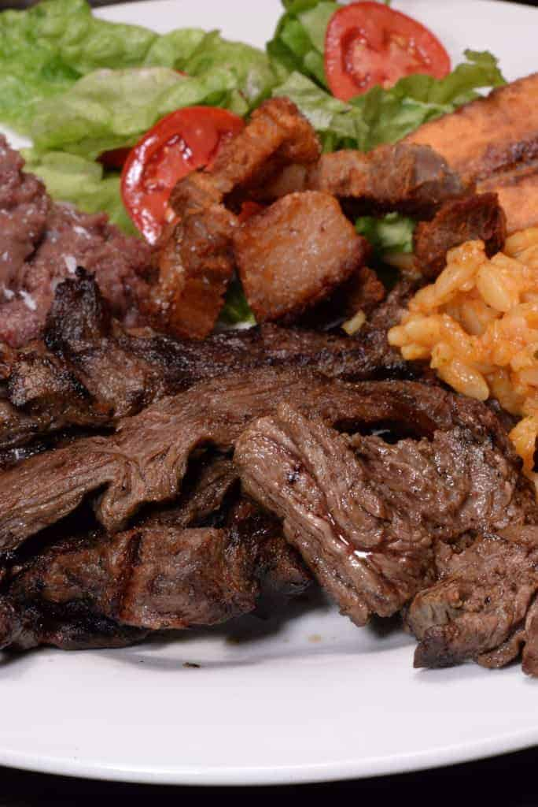

Baleadas, sopa de caracol y carne asada, orgullo catracho.
Baleadas
Desayuno
Ingredientes
- 8 tortillas de harina
- 2 tazas de frijoles rojos cocidos
- 1 taza de queso rallado
- 1/2 taza de crema
- Aceite y sal
Pasos
- Licuar los frijoles con un poco de su caldo y freírlos hasta obtener una pasta cremosa.
- Calentar las tortillas de harina en un comal por ambos lados.
- Untar frijoles sobre cada tortilla y añadir queso y crema.
- Doblar las tortillas por la mitad y servir de inmediato.
Sopa de caracol
Sopa
Ingredientes
- 500 g de carne de caracol limpia
- Leche de coco y caldo de pescado
- Yuca y plátano verde
- Cebolla, ajo y chile dulce
- Culantro, comino y sal
Pasos
- Sofreír cebolla, ajo y chile dulce con comino.
- Agregar el caldo, la leche de coco, la yuca y el plátano; cocinar hasta que estén casi tiernos.
- Incorporar el caracol y cocinar suavemente de 10 a 15 minutos para que no se endurezca.
- Añadir culantro, rectificar la sal y servir caliente.

Carne asada
Plato fuerte
Ingredientes
- 800 g de carne de res para asar
- Jugo de naranja agria o limón
- 3 dientes de ajo
- Comino, sal y pimienta
- Chimol y tortillas para acompañar
Pasos
- Marinar la carne con cítrico, ajo, comino, sal y pimienta durante al menos 30 minutos.
- Calentar bien la parrilla y asar la carne de 4 a 6 minutos por lado, según el grosor.
- Dejar reposar la carne 5 minutos antes de cortarla.
- Servir con chimol, tortillas, frijoles y aguacate.